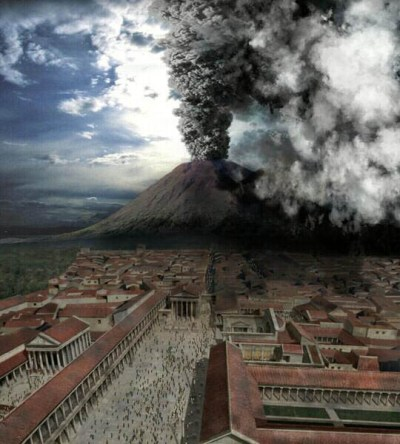

|  |
It was a normal summer day in Herculaneum, until a small surge of lava
came out of Vesuvius at 1p.m. in the afternoon
AD 79. People then started to flee with their valuables. At 12a.m. in
the morning, the mushroom cloud reached 19 miles high. The ash deposits
started to fall over the neighboring town of Pompeii.
A cloud over 900 degrees Fahrenheit then covered Herculaneum which occurred
at 1a.m.. There were five more surges that followed. These occurred at
2a.m., 6:30a.m., 7:30a.m, 7:45a.m. and the final surge occurred at 8:15a.m..
This volcanic eruption was the greatest eruption ever.
|